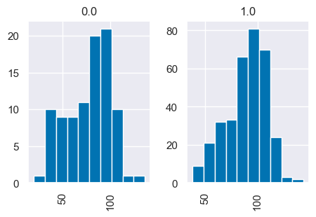
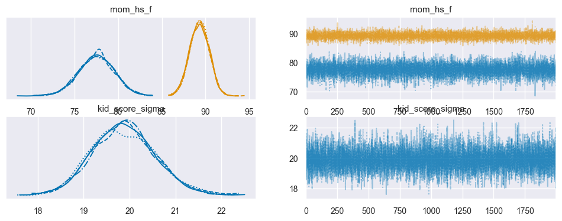
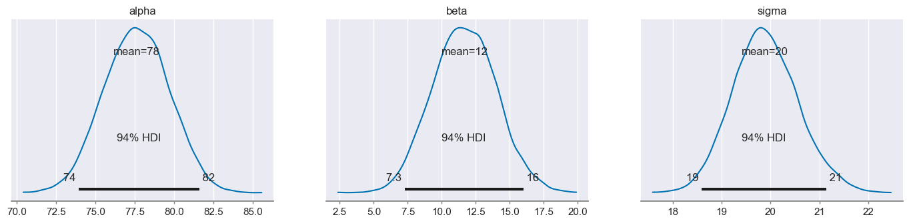
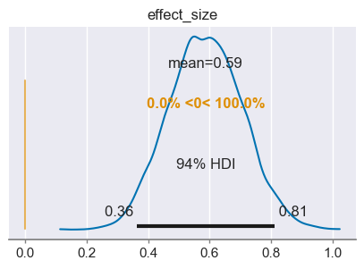

Confronto tra le medie di due gruppi
Contents
43. Confronto tra le medie di due gruppi#
Diverse procedure di inferenza statistica implicano il confronto tra due gruppi. Potremmo essere interessati a sapere se la media di un gruppo è più grande della media di un altro gruppo, o semplicemente se le due medie sono tra loro diverse. La domanda si riferisce ai parametri delle popolazioni da cui i due gruppi sono stati campionati, non alla differenza tra le medie osservate. Per trovare una risposta alla nostra domanda, dunque, abbiamo bisogno di fare ricorso ad un modello statistico, perché le vere differenze sono solitamente offuscate dall’errore di misurazione (o rumore stocastico), il che ci impedisce di trarre conclusioni semplicemente dalle differenze calcolate dai dati osservati.
Lo standard per il confronto statistico tra due (o più) campioni consiste nell’utilizzo di un test statistico. Ciò comporta l’espressione di un’ipotesi nulla, che in genere afferma che non vi è alcuna differenza tra i gruppi, e l’utilizzo di una statistica test scelta per determinare se la distribuzione dei dati osservati è plausibile sotto l’ipotesi nulla. L’ipotesi nulla viene rifiuta quando la statistica del test calcolata sui dati osservati è superiore a un valore soglia prestabilito.
Sfortunatamente, non è facile condurre correttamente un test di ipotesi e i risultati di tali test sono spesso fraintesi. L’impostazione di un test statistico comporta diverse scelte soggettive (ad es. il tipo di test statistico da utilizzare, la specificazione dell’ipotesi nulla da testare, la scelta del livello di significatività) da parte dell’utente che raramente sono giustificate in base al problema, ma piuttosto sono solitamente basate su scelte tradizionali che sono del tutto arbitrare. L’evidenza che fornisce all’utente è indiretta, incompleta e tipicamente soprastima l’evidenza contro l’ipotesi nulla.
Un approccio più informativo ed efficace per confrontare i gruppi è quello basato sulla stima piuttosto che sulla verifica di ipotesi ed è guidato dall’approccio bayesiano piuttosto che da quello frequentista. Cioè, piuttosto che testare se due gruppi sono diversi, ci poniamo invece il problema di stimare di quanto sono diversi, il che è molto più informativo. Inoltre, in tale stima, includiamo una stima dell’incertezza associata a tale differenza, la quale include l’incertezza dovuta alla nostra mancanza di conoscenza sui parametri del modello (incertezza epistemica) e l’incertezza dovuta alla stocasticità intrinseca del sistema (incertezza aleatoria).
43.1. Un esempio illustrativo#
Per illustrare come funziona in pratica l’approccio di stima bayesiana sulla differenza tra le medie di due gruppi, useremo nuovamente i dati kidiq. In questo caso i due gruppi di bambini sono identificati dal livello di scolarità della madre: per un primo gruppo di bambini la madre non ha completato le scuole superiori, per il secondo gruppo la madre ha ottenuto il diploma superiore. Ci chiediamo come sia possibile ottenere una stima (nella popolazione) della differenza tra le medie del quoziente di intelligenza del bambino nei due gruppi. In questo capitolo vedremo come sia possibile usare l’analisi della regressione per rispondere a questa domanda.
import matplotlib.pyplot as plt
import seaborn as sns
import numpy as np
import pandas as pd
import scipy as sc
import statistics as st
import arviz as az
import bambi as bmb
import pymc as pm
from pymc import HalfNormal, Model, Normal, sample
from scipy.constants import golden
import warnings
warnings.filterwarnings("ignore")
warnings.simplefilter("ignore")
%matplotlib inline
plt.rc('figure', figsize=(5.0, 5.0/golden))
sns.set_theme()
sns.set_palette("colorblind")
SEED = 12345
rng = np.random.default_rng(SEED)
Leggiamo i dati:
kidiq = pd.read_stata("data/kidiq.dta")
kidiq.head()
| kid_score | mom_hs | mom_iq | mom_work | mom_age | |
|---|---|---|---|---|---|
| 0 | 65 | 1.0 | 121.117529 | 4 | 27 |
| 1 | 98 | 1.0 | 89.361882 | 4 | 25 |
| 2 | 85 | 1.0 | 115.443165 | 4 | 27 |
| 3 | 83 | 1.0 | 99.449639 | 3 | 25 |
| 4 | 115 | 1.0 | 92.745710 | 4 | 27 |
kidiq.groupby(["mom_hs"]).size()
mom_hs
0.0 93
1.0 341
dtype: int64
Ci sono 93 bambini la cui madre non ha completato le superiori e 341 bambini la cui madre ha ottenuto il diploma di scuola superiore.
summary_stats = [st.mean, st.stdev]
kidiq.groupby(["mom_hs"]).aggregate(summary_stats)
| kid_score | mom_iq | mom_work | mom_age | |||||
|---|---|---|---|---|---|---|---|---|
| mean | stdev | mean | stdev | mean | stdev | mean | stdev | |
| mom_hs | ||||||||
| 0.0 | 77.548387 | 22.573800 | 91.889152 | 12.630498 | 2.322581 | 1.226175 | 21.677419 | 2.727323 |
| 1.0 | 89.319648 | 19.049483 | 102.212049 | 14.848414 | 3.052786 | 1.120727 | 23.087977 | 2.617453 |
I bambini la cui madre ha completato le superiori tendono ad avere un QI maggiore di 11.8 punti rispetto ai bambini la cui madre non ha concluso le superiori.
89.319648 - 77.548387
11.771260999999996
kidiq.hist("kid_score", by="mom_hs")
array([<AxesSubplot: title={'center': '0.0'}>,
<AxesSubplot: title={'center': '1.0'}>], dtype=object)

Iniziamo la nostra inferenza statistica usando bambi. Per semplicità, ricodifichiamo la variabile che distingue i due gruppi di madri nel modo seguente:
kidiq["mom_hs_f"] = np.where(kidiq["mom_hs"] == 1.0, "yes", "no")
kidiq.describe
<bound method NDFrame.describe of kid_score mom_hs mom_iq mom_work mom_age mom_hs_f
0 65 1.0 121.117529 4 27 yes
1 98 1.0 89.361882 4 25 yes
2 85 1.0 115.443165 4 27 yes
3 83 1.0 99.449639 3 25 yes
4 115 1.0 92.745710 4 27 yes
.. ... ... ... ... ... ...
429 94 0.0 84.877412 4 21 no
430 76 1.0 92.990392 4 23 yes
431 50 0.0 94.859708 2 24 no
432 88 1.0 96.856624 2 21 yes
433 70 1.0 91.253336 2 25 yes
[434 rows x 6 columns]>
Scriviamo il modello statistico nel modo seguente:
model = bmb.Model("kid_score ~ 0 + mom_hs_f", kidiq)
La variabile mom_hs_f è una variabile categoriale e verrà trasformata automaticamente da bambi in maniera tale che le stime dei due coefficienti del modello corrisponderanno alle medie dei due gruppi.
idata = model.fit(draws=2000)
Auto-assigning NUTS sampler...
Initializing NUTS using jitter+adapt_diag...
Multiprocess sampling (4 chains in 4 jobs)
NUTS: [kid_score_sigma, mom_hs_f]
Sampling 4 chains for 1_000 tune and 2_000 draw iterations (4_000 + 8_000 draws total) took 17 seconds.
_ = az.plot_trace(idata)

az.summary(idata)
| mean | sd | hdi_3% | hdi_97% | mcse_mean | mcse_sd | ess_bulk | ess_tail | r_hat | |
|---|---|---|---|---|---|---|---|---|---|
| mom_hs_f[no] | 77.531 | 2.043 | 73.549 | 81.203 | 0.019 | 0.013 | 11891.0 | 6064.0 | 1.0 |
| mom_hs_f[yes] | 89.302 | 1.087 | 87.257 | 91.289 | 0.010 | 0.007 | 13036.0 | 6238.0 | 1.0 |
| kid_score_sigma | 19.880 | 0.685 | 18.623 | 21.191 | 0.007 | 0.005 | 10846.0 | 5812.0 | 1.0 |
Il parametro associato alla modalità no corrisponde alla media del QI del gruppo dei bambini la cui madre non ha completato le scuole superiori. Il parametro associato alla modalità yes corrisponde alla media del QI del gruppo dei bambini la cui madre ha completato le scuole superiori.
Ai due parametri è associato un intervallo di credibilità. La quantità di sovrapposizione tra i due intervalli ci fornisce una certezza più o meno grande della differenza tra le medie delle due popolazioni. Nel caso presente, per intervalli del 94%, non vi è alcuna sovrapposizione. Per cui, con un livello di certezza del 94% possiamo concludere che il QI dei bambini la cui madre ha completato le superiori tende ad essere maggiore del QI dei bambini la cui madre non ha completato le superiori.
Ripetiamo ora l’analisi usando una parametrizzazione divera. In questo caso useremo PyMC.
Iniziamo ad estrarre le variabili dal DataFrame.
kid_score = kidiq["kid_score"]
mom_hs = kidiq["mom_hs"]
Specifichiamo ora il modello PyMC.
μ_m = kidiq.kid_score.mean()
μ_s = kidiq.kid_score.std() * 2
with Model() as model:
# Priors
alpha = Normal("alpha", mu=μ_m, sigma=μ_s)
beta = Normal("beta", mu=0, sigma=10)
sigma = pm.HalfCauchy("sigma", beta=20)
# Expected value of outcome
mu = alpha + beta * mom_hs
# Likelihood of observations
Y_obs = pm.Normal("Y_obs", mu=mu, sigma=sigma, observed=kid_score)
Eseguiamo il campionamento.
with model:
trace = pm.sample()
Auto-assigning NUTS sampler...
Initializing NUTS using jitter+adapt_diag...
Multiprocess sampling (4 chains in 4 jobs)
NUTS: [alpha, beta, sigma]
Sampling 4 chains for 1_000 tune and 1_000 draw iterations (4_000 + 4_000 draws total) took 19 seconds.
Esaminiamo i risultati.
az.summary(trace)
| mean | sd | hdi_3% | hdi_97% | mcse_mean | mcse_sd | ess_bulk | ess_tail | r_hat | |
|---|---|---|---|---|---|---|---|---|---|
| alpha | 78.117 | 2.032 | 74.244 | 81.819 | 0.048 | 0.034 | 1800.0 | 1872.0 | 1.0 |
| beta | 11.082 | 2.265 | 6.836 | 15.294 | 0.054 | 0.038 | 1792.0 | 1992.0 | 1.0 |
| sigma | 19.866 | 0.682 | 18.635 | 21.207 | 0.014 | 0.010 | 2345.0 | 1978.0 | 1.0 |
In questo caso, abbiamo specificato un modello di regressione con la forma seguente:
La variabile \(X\) assume il valore 0 per il primo gruppo. Per quel gruppo, dunque, il modello si riduce a
Il parametro \(\alpha\) corrisponde dunque alla media di kid_score per il gruppo codificato con mom_hs = 0.
Per il secondo gruppo, con mom_hs = 1, il modello diventa
Il \(\mathbb{E}(Y)\) è la media del secondo gruppo. Dato che \(\alpha\) corrisponde alla media di kid_score per il primo gruppo, questo significa che \(\beta\) corrisponde alla differenza tra le medie dei due gruppi.
77.539 + 11.767
89.306
L’incertezza a proposito della differenza tra le medie dei due gruppi (ovvero, l’incertezza associata al parametro \(\beta\)) rappresenta l’oggetto del nostro interesse. Pertanto, l’intervallo di credibilità associato al parametro \(\beta\) è la risposta alla domanda che ci eravamo posti: ci sono evidenze convincenti che le medie dei due gruppi sono diverse? Se l’intervallo di credibilità non include lo 0 (il che significa che non vi è differenza tra i due gruppi) allora, al livello di credibilità prescelto, possiamo concludere che le due medie sono diverse.
43.2. Dimensione dell’effetto#
La dimensione dell’effetto (effect size) è una misura della forza dell’associazione osservata, ovvero della grandezza della differenza tra i gruppi attesa che include l’incertezza sui dati. L’indice maggiormente usato per quantificare la dimensione dell’effetto è l’indice \(d\) di Cohen. Nel caso di due medie abbiamo:
laddove
e la varianza di ciascun gruppo è calcolata come
Solitamente, l’indice \(d\) di Cohen si interpreta usando la metrica seguente:
Dimensione dell’effetto |
\(d\) |
|---|---|
Very small |
0.01 |
Small |
0.20 |
Medim |
0.50 |
Large |
0.80 |
Very large |
1.20 |
Huge |
2.0 |
Per una trattazione bayesiana (in un caso più complesso del presente) della stima della dimensione dell’effetto, si veda [Kru14].
μ_m = kidiq.kid_score.mean()
μ_s = kidiq.kid_score.std() * 2
with Model() as model_ef:
# Define priors
alpha = Normal("alpha", mu=μ_m, sigma=μ_s)
beta = Normal("beta", mu=0, sigma=30)
sigma = pm.HalfCauchy("sigma", beta=20)
# Expected value of outcome
mu = alpha + beta * mom_hs
# Likelihood of observations
Y_obs = pm.Normal("Y_obs", mu=mu, sigma=sigma, observed=kid_score)
effect_size = pm.Deterministic("effect_size", beta / sigma)
trace_ef = pm.sample(2000, return_inferencedata=True)
Auto-assigning NUTS sampler...
Initializing NUTS using jitter+adapt_diag...
Multiprocess sampling (4 chains in 4 jobs)
NUTS: [alpha, beta, sigma]
Sampling 4 chains for 1_000 tune and 2_000 draw iterations (4_000 + 8_000 draws total) took 25 seconds.
---------------------------------------------------------------------------
KeyboardInterrupt Traceback (most recent call last)
Cell In[19], line 15
13 Y_obs = pm.Normal("Y_obs", mu=mu, sigma=sigma, observed=kid_score)
14 effect_size = pm.Deterministic("effect_size", beta / sigma)
---> 15 trace_ef = pm.sample(2000, return_inferencedata=True)
File ~/opt/anaconda3/envs/pymc/lib/python3.10/site-packages/pymc/sampling/mcmc.py:619, in sample(draws, step, init, n_init, initvals, trace, chains, cores, tune, progressbar, model, random_seed, discard_tuned_samples, compute_convergence_checks, callback, jitter_max_retries, return_inferencedata, keep_warning_stat, idata_kwargs, mp_ctx, **kwargs)
614 warnings.warn(
615 "The number of samples is too small to check convergence reliably.",
616 stacklevel=2,
617 )
618 else:
--> 619 convergence_warnings = run_convergence_checks(idata, model)
620 mtrace.report._add_warnings(convergence_warnings)
622 if return_inferencedata:
623 # By default we drop the "warning" stat which contains `SamplerWarning`
624 # objects that can not be stored with `.to_netcdf()`.
File ~/opt/anaconda3/envs/pymc/lib/python3.10/site-packages/pymc/stats/convergence.py:108, in run_convergence_checks(idata, model)
105 warnings.append(warn)
107 warnings += warn_divergences(idata)
--> 108 warnings += warn_treedepth(idata)
110 return warnings
File ~/opt/anaconda3/envs/pymc/lib/python3.10/site-packages/pymc/stats/convergence.py:147, in warn_treedepth(idata)
145 warnings = []
146 for c in treedepth.chain:
--> 147 if sum(treedepth.sel(chain=c)) / treedepth.sizes["draw"] > 0.05:
148 warnings.append(
149 SamplerWarning(
150 WarningType.TREEDEPTH,
(...)
154 )
155 )
156 return warnings
File ~/opt/anaconda3/envs/pymc/lib/python3.10/site-packages/xarray/core/_typed_ops.py:206, in DataArrayOpsMixin.__add__(self, other)
205 def __add__(self, other):
--> 206 return self._binary_op(other, operator.add)
File ~/opt/anaconda3/envs/pymc/lib/python3.10/site-packages/xarray/core/dataarray.py:4362, in DataArray._binary_op(self, other, f, reflexive)
4355 other_coords = getattr(other, "coords", None)
4357 variable = (
4358 f(self.variable, other_variable)
4359 if not reflexive
4360 else f(other_variable, self.variable)
4361 )
-> 4362 coords, indexes = self.coords._merge_raw(other_coords, reflexive)
4363 name = self._result_name(other)
4365 return self._replace(variable, coords, name, indexes=indexes)
File ~/opt/anaconda3/envs/pymc/lib/python3.10/site-packages/xarray/core/coordinates.py:181, in Coordinates._merge_raw(self, other, reflexive)
179 else:
180 coord_list = [self, other] if not reflexive else [other, self]
--> 181 variables, indexes = merge_coordinates_without_align(coord_list)
182 return variables, indexes
File ~/opt/anaconda3/envs/pymc/lib/python3.10/site-packages/xarray/core/merge.py:420, in merge_coordinates_without_align(objects, prioritized, exclude_dims, combine_attrs)
416 filtered = collected
418 # TODO: indexes should probably be filtered in collected elements
419 # before merging them
--> 420 merged_coords, merged_indexes = merge_collected(
421 filtered, prioritized, combine_attrs=combine_attrs
422 )
423 merged_indexes = filter_indexes_from_coords(merged_indexes, set(merged_coords))
425 return merged_coords, merged_indexes
File ~/opt/anaconda3/envs/pymc/lib/python3.10/site-packages/xarray/core/merge.py:302, in merge_collected(grouped, prioritized, compat, combine_attrs, equals)
300 variables = [variable for variable, _ in elements_list]
301 try:
--> 302 merged_vars[name] = unique_variable(
303 name, variables, compat, equals.get(name, None)
304 )
305 except MergeError:
306 if compat != "minimal":
307 # we need more than "minimal" compatibility (for which
308 # we drop conflicting coordinates)
File ~/opt/anaconda3/envs/pymc/lib/python3.10/site-packages/xarray/core/merge.py:149, in unique_variable(name, variables, compat, equals)
145 break
147 if equals is None:
148 # now compare values with minimum number of computes
--> 149 out = out.compute()
150 for var in variables[1:]:
151 equals = getattr(out, compat)(var)
File ~/opt/anaconda3/envs/pymc/lib/python3.10/site-packages/xarray/core/variable.py:564, in Variable.compute(self, **kwargs)
546 """Manually trigger loading of this variable's data from disk or a
547 remote source into memory and return a new variable. The original is
548 left unaltered.
(...)
561 dask.array.compute
562 """
563 new = self.copy(deep=False)
--> 564 return new.load(**kwargs)
File ~/opt/anaconda3/envs/pymc/lib/python3.10/site-packages/xarray/core/variable.py:539, in Variable.load(self, **kwargs)
522 def load(self, **kwargs):
523 """Manually trigger loading of this variable's data from disk or a
524 remote source into memory and return this variable.
525
(...)
537 dask.array.compute
538 """
--> 539 if is_duck_dask_array(self._data):
540 self._data = as_compatible_data(self._data.compute(**kwargs))
541 elif not is_duck_array(self._data):
File ~/opt/anaconda3/envs/pymc/lib/python3.10/site-packages/xarray/core/pycompat.py:81, in is_duck_dask_array(x)
80 def is_duck_dask_array(x):
---> 81 return is_duck_array(x) and is_dask_collection(x)
File ~/opt/anaconda3/envs/pymc/lib/python3.10/site-packages/xarray/core/pycompat.py:73, in is_dask_collection(x)
72 def is_dask_collection(x):
---> 73 if module_available("dask"):
74 from dask.base import is_dask_collection
76 return is_dask_collection(x)
File ~/opt/anaconda3/envs/pymc/lib/python3.10/site-packages/xarray/core/utils.py:1161, in module_available(module)
1146 def module_available(module: str) -> bool:
1147 """Checks whether a module is installed without importing it.
1148
1149 Use this for a lightweight check and lazy imports.
(...)
1159 Whether the module is installed.
1160 """
-> 1161 return importlib.util.find_spec(module) is not None
File ~/opt/anaconda3/envs/pymc/lib/python3.10/importlib/util.py:103, in find_spec(name, package)
101 else:
102 parent_path = None
--> 103 return _find_spec(fullname, parent_path)
104 else:
105 module = sys.modules[fullname]
File <frozen importlib._bootstrap>:945, in _find_spec(name, path, target)
File <frozen importlib._bootstrap_external>:1439, in find_spec(cls, fullname, path, target)
File <frozen importlib._bootstrap_external>:1411, in _get_spec(cls, fullname, path, target)
File <frozen importlib._bootstrap_external>:1575, in find_spec(self, fullname, target)
File <frozen importlib._bootstrap>:244, in _verbose_message(message, verbosity, *args)
KeyboardInterrupt:
_ = az.plot_posterior(trace_ef, var_names=["alpha", "beta", "sigma"])

_ = az.plot_posterior(trace_ef, ref_val=0, var_names=["effect_size"])

az.summary(trace_ef)
| mean | sd | hdi_3% | hdi_97% | mcse_mean | mcse_sd | ess_bulk | ess_tail | r_hat | |
|---|---|---|---|---|---|---|---|---|---|
| alpha | 77.632 | 2.063 | 73.929 | 81.594 | 0.036 | 0.026 | 3236.0 | 3442.0 | 1.0 |
| beta | 11.669 | 2.340 | 7.273 | 15.990 | 0.041 | 0.029 | 3296.0 | 3658.0 | 1.0 |
| sigma | 19.888 | 0.672 | 18.593 | 21.137 | 0.010 | 0.007 | 4653.0 | 4228.0 | 1.0 |
| effect_size | 0.587 | 0.119 | 0.365 | 0.810 | 0.002 | 0.001 | 3313.0 | 3564.0 | 1.0 |
Possiamo dunque concludere che, per ciò che concerne l’effetto della scolarità della madre sul quoziente di intelligenza del bambino, la dimensione dell’effetto è “media”.
43.3. Watermark#
%load_ext watermark
%watermark -n -u -v -iv -w
Last updated: Wed Jan 04 2023
Python implementation: CPython
Python version : 3.8.15
IPython version : 8.7.0
arviz : 0.14.0
scipy : 1.9.3
bambi : 0.9.2
pymc : 5.0.0
matplotlib: 3.6.2
numpy : 1.24.0
sys : 3.8.15 (default, Nov 24 2022, 09:04:07)
[Clang 14.0.6 ]
pandas : 1.5.2
Watermark: 2.3.1